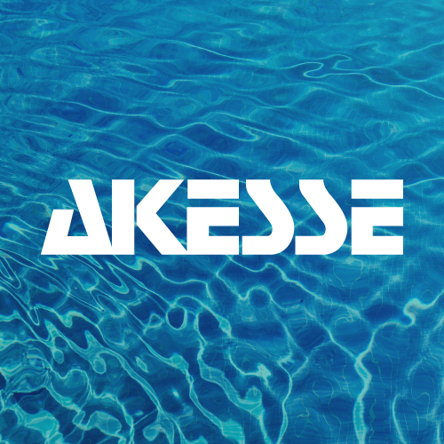
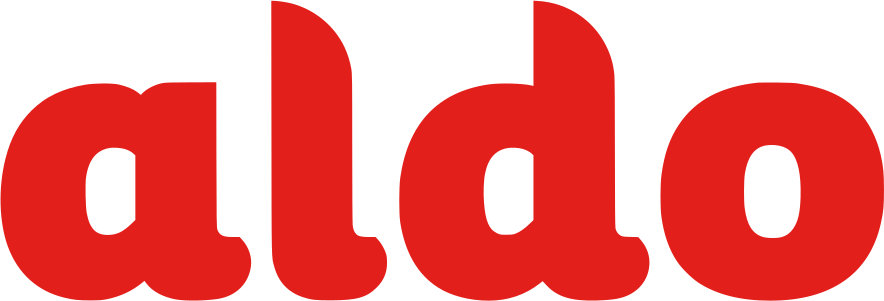
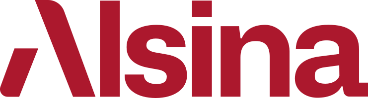
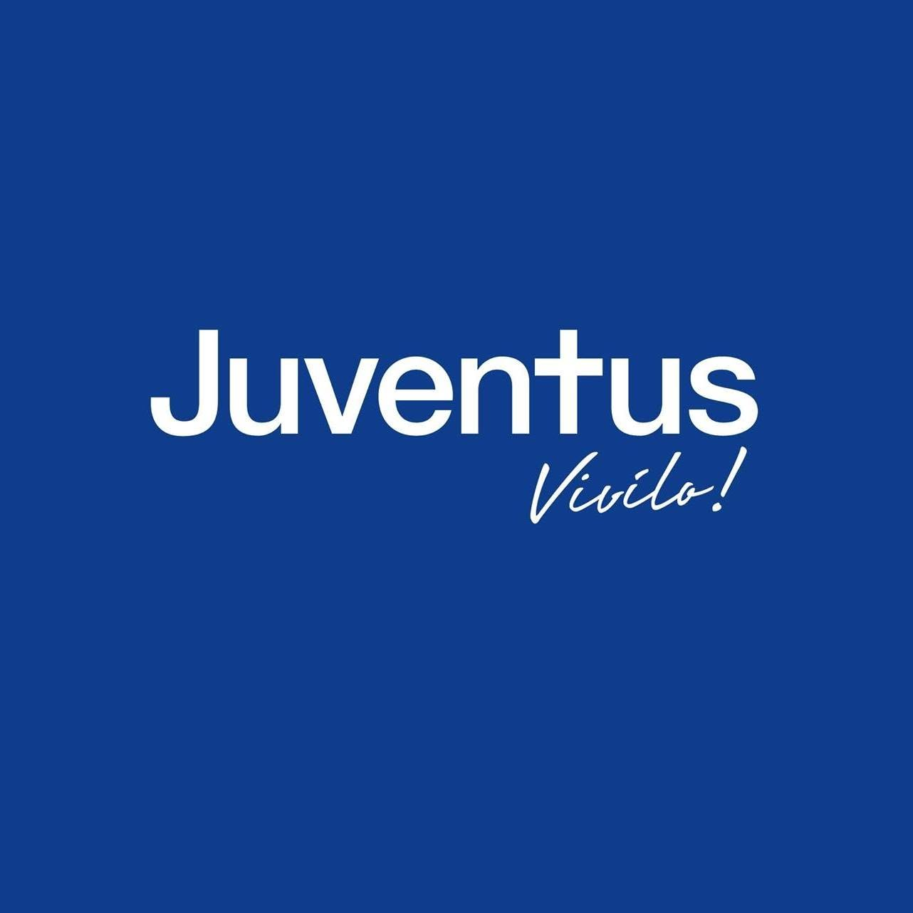
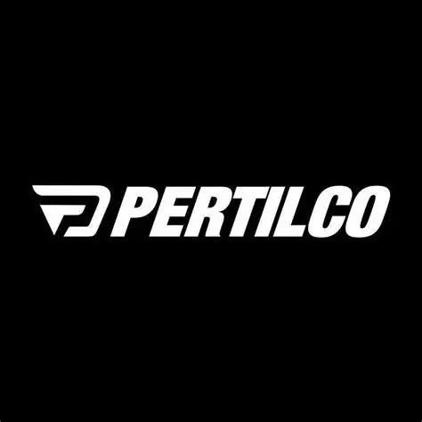

acompañando a empresas en Uruguay.
Soluciones de talento y desarrollo organizacional para empresas.
Un solo socio para atraer, gestionar y desarrollar el talento de tu organización
Desde una búsqueda crítica hasta la administración de equipos o una transformación organizacional, diseñamos la solución que tu empresa necesita en Uruguay.
Cerca de 80 añosde experiencia local
+50,000profesionales registrados
Solucionesa medida

Ciclo de talento
Atraer → gestionar → escalar → desarrollar
Soluciones a medida
según estructura, cultura y necesidad
registrados.
según estructura, cultura y necesidad.
en selección, liquidación de sueldos, tercerización y desarrollo organizacional.
EL DESAFÍO
Los desafíos de talento no terminan cuando se cubre una vacante
Encontrar a la persona adecuada es solo una parte. Las empresas también necesitan administrar equipos, reducir carga operativa, escalar con flexibilidad y alinear personas, cultura y objetivos. Resolver cada necesidad con un proveedor distinto fragmenta la gestión y retrasa decisiones.
Selección
Liquidación
Tercerización
Desarrollo
Un mismo socio
Friedman
SOLUCIÓN INTEGRAL
Friedman te acompaña en cada etapa del ciclo de talento
Combinamos conocimiento del mercado uruguayo, cercanía consultiva y soluciones a medida para responder a una necesidad puntual o construir una relación de largo plazo.
Atraer
Gestionar
Escalar
Desarrollar
SOLUCIONES PARA TU EMPRESA
¿Qué necesita resolver tu empresa?
Elegí la solución que mejor responde al desafío de tu organización.
Captación
01
Captación de talento
Cubrir posiciones operativas, técnicas o profesionales con un proceso alineado a la necesidad y cultura de tu empresa.
Scouting
02
Executive Scouting
Identificar líderes y perfiles ejecutivos especializados cuando la posición exige profundidad, discreción y evaluación estratégica.
Payrolling
03
Payrolling
Reducir la carga administrativa de liquidación de sueldos y liberar tiempo del equipo interno.
Outsourcing
04
Intermediación / Outsourcing
Incorporar talento o ampliar capacidades sin aumentar de inmediato la estructura interna.
Transformación
05
Desarrollo Organizacional
Diagnosticar desempeño, cultura o liderazgo y construir un plan de transformación a medida.
BENEFICIOS PRINCIPALES
Más claridad para decidir. Más capacidad para ejecutar.
Menos riesgo
Procesos y evaluaciones alineados al cargo, la cultura y el momento de la empresa.
Más foco operativo
Friedman asume procesos que consumen tiempo del equipo interno.
Flexibilidad
Soluciones por vacante, proyecto o relación recurrente según la necesidad.
Continuidad
Un mismo socio puede acompañar nuevas necesidades a medida que la organización evoluciona.
Conocimiento local
Experiencia en el mercado laboral y empresarial de Uruguay.

EMPRESAS QUE LLEGAN A URUGUAY
¿Tu empresa empieza a operar en Uruguay?
Te ayudamos a formar, administrar y desarrollar tu equipo local: desde las primeras búsquedas hasta payrolling, intermediación y construcción de procesos de Recursos Humanos.
CÓMO TRABAJAMOS
Una solución construida alrededor de tu desafío
Alcances y tiempos se confirman después del diagnóstico inicial.
Nos contás qué necesita resolver tu empresa, el contexto y el plazo.
Nuestro equipo evalúa el desafío y define el enfoque adecuado.
Diseñamos una propuesta a medida con alcance, proceso y responsables.
Implementamos y damos seguimiento según el servicio contratado.
1946→ hoy
CAPACIDAD FRIEDMAN
Experiencia y soluciones para acompañar cada etapa del talento
TESTIMONIOS
Más claridad para decidir. Más capacidad para ejecutar.
Menos riesgo, más foco operativo, flexibilidad y acompañamiento local.

★★★★★
Menos riesgo. Procesos y evaluaciones alineados al cargo, la cultura y el momento de la empresa.

★★★★★
Más foco operativo. Friedman asume procesos que consumen tiempo del equipo interno.

★★★★★
Conocimiento local. Experiencia en el mercado laboral y empresarial de Uruguay.
SECTORES
Talento estratégico para empresas de distintos sectores
Diseñamos soluciones alineadas a la operación, la cultura y los objetivos de cada organización.






FAQ
Preguntas frecuentes
No. Además de captación y Executive Scouting, Friedman ofrece payrolling, intermediación/outsourcing y desarrollo organizacional, según la necesidad de cada empresa.
No. El alcance se define a partir del desafío, la estructura, la cultura y los objetivos de la organización.
Trabajamos con empresas que necesitan profesionalizar o ampliar su gestión de talento.
Depende del servicio y la urgencia. Después de conocer tu desafío, el equipo confirma alcance y próximos pasos.
Sí. Las oportunidades laborales se gestionan en oportunidades.friedman.com.uy; este formulario es exclusivo para empresas.
FORMULARIO EXCLUSIVO PARA EMPRESAS